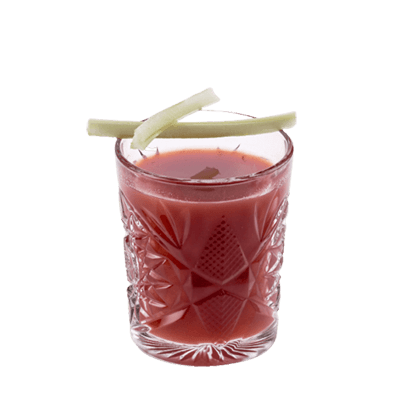

Bloody-Mary#
Metadata#
- IBA Cocktail: 02-IBA-Cocktail#Contemporary Classics 當代經典
- Type:
- Main Spirit: Vodka
- Method: Rolling or Stir
- Glasses: Collins glass
- Main Recipe Source: 07-01-Le Grand Cours de Cocktails

Ingredients & Proportion#
- 50 ml Vodka
- 100 ml Tomato Juice
- 10 ml Lemon Juice
- 3 dashes Worcestershire Sauce
- Tabasco, Celery Salt, Pepper (Up to taste)
Garnish#
- Celery
- Lemon Wedge (Optional)
How to make#
- Add ingredients and ice then ROLL (rotate rather than shake)
- Fine strain into ice-filled glass
- Use ice fresh from freezer (rather than ice-machine/ice-well) to fill glass to avoid unwanted dilution.
Notes#
- 我浪費一堆番茄汁才發現之前一直失敗的原因在絕對伏特加，去掉伏特加這味道我立刻就喜歡了起來。所以我更偏向把它當冷湯喝，之後有興致可能再拿其他伏特加試試……
-
在「聖母瑪利亞」的基礎上小心翼翼加伏特加（不是絕對伏特加）做「血腥瑪麗」，加到一盎司（原配方是50ml）感覺剛剛好，再加感覺就會苦到無法接受，比這個少則一點酒精感都沒有，美味！
-
不知道是我的味蕾終於被改造成功了還是有什麼其他因素導致這次做的酒和以往有什麼不同，這次消耗番茄蛤蜊汁做血腥凱撒加了45ml的伏特加（甚至覺得可以多加點，就是絕對伏特加）不僅沒覺得苦，反倒是終於品嚐到巴天德們成天都在說的「清爽感」。第一次看到這酒的配方並看到說它「清爽」的評論時我覺得這些人都瘋了，現在我覺得我瘋了。
- 再想一想排除我個人感官的因素，還有可能有兩個因素讓這杯酒精含量提升的酒變得好喝。
- 一，我做的是「血腥凱撒」而不是「血腥瑪麗」，用的是番茄蛤蜊汁而不是番茄汁，前者有可能和伏特加更搭；
-
二，這次加檸檬汁時我很隨意，沒有測量而是直接榨了半個新鮮大黃檸檬，汁水還挺豐富，目測可能有15ml，或許檸檬汁變多且質量提高也是關鍵因素。
-
開胃酒，喝了會變得有食慾，建議喝時旁邊備點零食或吃飯時喝~
-
塔巴斯科辣醬感覺一點都不辣……
-
我還蠻想試一試「血腥凱撒」的……
-
現在再看高老師的「血腥瑪麗」調製視頻，會更理解他說的話。不去在意伏特加質量，確實很難把這款經典調酒做好喝，最好不要因為因這款酒的歷史和過去人們習慣的做法把它當作劣質雞尾酒看待。不過番茄罐頭個人感覺還是很重要的，整個口感明顯要比鮮榨番茄汁更濃郁。他視頻裡用了新鮮番茄，但同時使用了自己改良了風味的伏特加（伏特加泡番茄和迷迭香，泡到番茄都掉色的程度），應該算是對新鮮番茄風味不足的補充？
-
最近用的是Clamato，正翻一飲樂酒志呢，發現提到了這牌子。不是用了這個牌子就「血腥凱撒」啦，明明有原味有辣味有蛤蜊味，正打算買一瓶蛤蜊味的做血腥凱撒，看著圖片直流口水……
-
但要注意 Clamato 再量多便宜也不要一下子買太多，除非打算頓頓午飯配血腥瑪麗大家族喝 orz ，打開後就算現在天氣再冷不快點喝完還是會壞……
-
給家人嚐了一下，感覺血腥瑪麗這一系列飲品還是不是所有人都能接受的。（我一開始也接受不了，後來才特別喜歡而且會使勁往裡加辣醬）